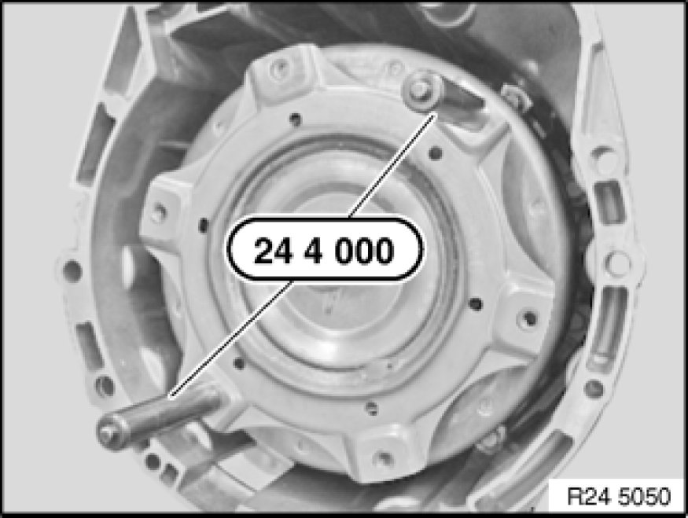

Torque Converter: Service and Repair
24 40 013 - Removing and installing/replacing torque converter (GA6L45R)

Special tools required:
- 00 2 550 00 2 550 Depth Gauge
- 24 4 000 24 4 000 Assembly Grip (2)

Important!
After completion of work, check transmission fluid level Procedures.
Use only approved transmission oil.
Failure to comply with this instruction will result in serious damage to the transmission.

Necessary preliminary tasks:
- Remove automatic transmission Removing and Installing Automatic Transmission (GA6L45R)

Screw special tool 24 4 000 24 4 000 Assembly Grip (2) into torque converter.
Remove torque converter.
Note:
When torque converter is removed, transmission oil flows out.

Installation Note:
When installing, do not damage shaft seal and bearing.
If the torque converter is not correctly installed, the driver of the pump impeller may be damaged when the transmission is flanged to the engine.
Remove torque converter and set down vertically.
Installation Note:
Push torque converter through shaft seal onto transmission shaft as far as it will go.
Press torque converter by hand into converter housing and turn in the process. Converter hub opening must snap into place in driver of pump impeller. Torque converter must be felt to slip inwards.
Determine distance between contact surface and surface (1) of tapped hole in torque converter with special tool 00 2 550 00 2 550 Depth Gauge.
Note:
Measured value must be greater than 25 mm.